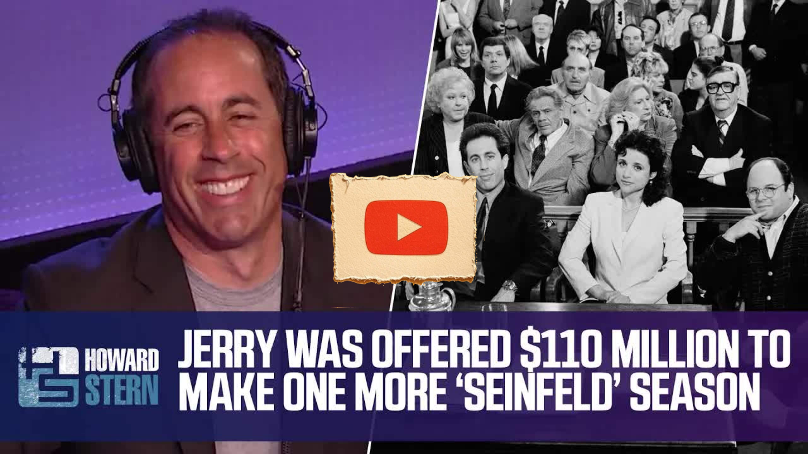

Great Pods
Jerry Seinfeld Was Offered $110 Million to Make Another Season of “Seinfeld” (2013)
Key Points
You can never top Seinfeld - it's iconic and was a perfect storm with ideal casting
Jerry and Larry David's comedy chemistry was instant - they clicked within minutes of talking
NBC ignored Jerry for 9 years despite his success on Carson Show before finally offering a meeting
The Seinfeld concept came from Jerry and Larry making fun of everything in a Korean deli
The show was originally conceived as "two comedians just making fun of stuff as they walk around"
Jerry loves when fans recite their favorite episodes and finds it flattering, not fatiguing
The Merv Griffin episode was created by Bruce Eric Kaplan, a New Yorker cartoonist
The masturbation episode was Larry David's idea and they never actually said the word
Only one sponsor pulled out due to the masturbation episode content
NBC offered Jerry $110 million for another season, but he could have gotten more
Jerry's decision to end the show wasn't about integrity - it was about preserving the intense love affair with the audience
He compared it to a comedian going too long - even 20 minutes extra can ruin the whole experience
The show ended with a "fireworks burst" while it was still at its peak
Larry David left after season 7, making Jerry's job much harder as head writer, executive producer, and star
Larry left because it was hard work, frustrating, and it wasn't really his show - he wanted to do his own
Running the show alone transformed Jerry into someone he never thought he could be
Jerry has a natural sense of timing for jokes, career moves, and knowing when to end things
All cast members discussed and agreed on ending the show together
Full Transcript
Language: en you could never really go back and do another sitcom the fear would be how could I ever top Seinfeld it's guaranteed you can't top it you can't even get close to it it's iconic it's like all this thank you everything was lined up everything was perfect the casting was right I'm not arrogant and stupid enough to think I did that so do you I know that I got caught in a you know what we call the perfect storm a good one right me and Larry fit together perfect how did you know to team up with him in comedy certain guys it's like it's funny right away you're talking all of a sudden in two minutes you've hit into something hilarious you guys start to talk and you say hey we've got to write a sitcom together no I had had this meeting at NBC where they said uh uh George Shapiro sent a note to Brandon tarticle of one sentence call me a crazy guy I have a feeling someday Jerry Seinfeld is going to be doing a TV series on NBC I had been on The Tonight Show with Johnny Carson for nine years nobody at NBC nobody not one person after nine years of going on Carson three and four times a year and killing nobody said why don't we talk to this kid nine years of killing on the Carson Show should have triggered something something nothing no so he sends this letter I come in for the meeting they go do you have anything you would like to do if you ever did a show for us I said not really great meeting I said I just always wanted to have a meeting like this this is what really what was the meaning was the goal the goal so a week later this is all true I'm talking with Larry David at The Improv I tell him the story we start talking and then we go across the street to a Korean Deli we're making fun of everything in the deli he goes this is what the show should be two comedians just making fun of stuff as they walk around during the day yeah and that was it do you dislike when people come up to you and start reciting what their favorite Seinfeld episode is does he get fatiguing after a while no I love the episode where Kramer gets the Merv Griffin set in his apartment thank you I love that one too was that your concept no it wasn't it was um uh Bruce Eric Kaplan who was a cartoonist for the New Yorker right who was on our staff for a couple years what about the masturbation episode where you all decide that you're going to see who can go the longest without masturbating that was Larry David's idea NBC didn't say uh hey you're mentioning masturbation you never said the word never never a while and I had the impression you did so it worked it worked and they there was not there was one sponsor pulled out one sponsor pulled out of the show that was all I remembered in terms of any sort of blowback on that Warren Littlefield wrote that if you would have given him another season in of Seinfeld he would have paid you 110 million dollars for the year 110 million dollars I could have got more than that okay you could have gotten more than that yeah and you said no right is that the ultimate in Integrity you were done you know it wasn't Integrity is a nice word and a a a flattering word I appreciate that but to be honest you know you know uh which is what's fun about coming on your show is if you just really want to be honest right because that's what you bring to the show okay um the love affair between the people that were making the show and the audience was so intense it was so white hot I I had to respect that and I could not go to that point where it starts to age and wither and it can only be and it doesn't take long for example you go see a comedian at an hour and 10 minutes you love the guy at an hour and 30 it's like right I thought he was never going to finish it and all of it you walk out with a whole different feeling it's a small amount of too much too much cake too much anything but do you think it changes the whole feeling about so we had this wonderful intense love affair right the people are making the show and the audience and I wanted it to end with a like a fireworks burst of it never was bad and also that last season you lost Larry David so that's two seasons right two seasons I made it even harder as a job right You've Lost Your sort of it wasn't really possible for a person to be the head writer executive producer and star that's 24 episodes if he had just not really humanly possible if he had stayed do you think he might have done another season yes yeah possibly why did he have to leave what was his foreign Howard it's hard work it's frustrating and it wasn't his show it was my show that's true and I think at that point he got the bug to go do his own perhaps and I think it worked out great for both of us I love his show right I loved running the show on my own that that turned me into someone I never thought I could be I never thought I could run the show on my own and when I did thank you that was great so I'm grateful to him for that if I said to Young Jerry who was blabbering away doing material there's going to be a 110 Million Dollar Payday the final season pretty crazy you would think you were definitely not saying no yeah but guess what if if you're about the money you're gonna go just so far that's true but don't you think the other cast members were upset with you no we sat and talked it over you did you went to each other we said how do we all feel but I I have to say I have a sense of timing right I I have it in jokes I have it in my sets I have it in my career I knew when to move to LA I knew when I was ready for The Tonight Show I knew when I was ready for us to do something bigger like the sitcom I just knew and I knew that was our moment
← All Summaries
Watch on YouTube